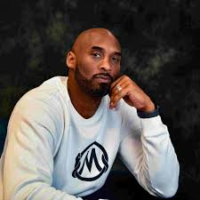

KOBE BRYANT
Everything negative - pressure, challenges - is all an opportunity for me to rise.
Kobe Bean Bryant (August 23, 1978 – January 26, 2020), son of former NBA player
Joe Bryant, was an American professional
basketball player who entered the National
Basketball Association (NBA) directly from high school, and played his entire
20-season professional career in the league with the Los Angeles Lakers.
Bryant won five NBA championships, was an 18-time All-Star, 15-time member of the All-NBA Team,
12-time member of the All-Defensive Team, was named the 2008 NBA Most Valuable Player
(MVP), and was a two-time NBA Finals MVP winner. Widely regarded as one of the
greatest players of all time, he led the NBA in scoring during two seasons,
ranks fourth on the league's all-time regular season scoring and all-time
postseason scoring lists.
Here are some of the many highlights of Kobe Bryant’s career
- 5-time NBA champion (2000-2002, 2009, 2010)
- 2-time NBA Finals Most Valuable Player (2009–2010)
- NBA MVP (2008)
- Academy Award winner for animated short film (2018)
- Academy Award winner for animated short film (2018)
- 4-time NBA All-Star Game MVP (2002, 2007, 2009, 2011)
- 11-time All-NBA First Team (2002–2004, 2006–2013)
- 2-time All-NBA Second Team (2000–2001)
- 2-time All-NBA Third Team (1999, 2005)
- 9-time NBA All-Defensive First Team (2000, 2003–2004, 2006–2011)
- 3-time NBA All-Defensive Second Team (2001–2002, 2012)
- 2-time NBA scoring champion (2006–2007)
- 2-time Olympic gold medalist (2008, 2012)
- NBA Slam Dunk Contest champion (1997)
- NBA All-Rookie Second Team (1997)
- Los Angeles Lakers all-time leading scorer (33,643 points)
- Naismith Prep Player of the Year (1996)
Kobe Bryant, also known as "The Black Mamba" is one of the greatest basketball player of this generation that will be forever remembered.
You can access his biography HERE